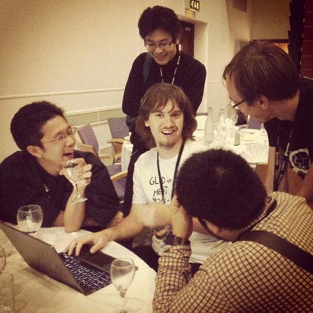

Your browser doesn't support the features required by impress.js, so you are presented with a simplified version of this presentation.
For the best experience please use the latest Chrome, Safari or Firefox browser.
Maptemberに行って来た
Taro Matsuzawa @smellman
Georepublic Japan
今日のお題
- 自己紹介
- Maptemberとは
- SOTM 2013 レポート
- QGIS Hack Fest レポート
- FOSS4G 2013 レポート
※今回の発表は個人の感想です
Georepublic Japan シニアエンジニア
- GISエンジニア見習い
- スマートフォンアプリ開発
- Webアプリケーション開発
- ちょっとだけインフラ
- pgRouting Workshop 講師
GISと僕
- たまたま馬場さんという人がVisual BasicプログラマをIRCで募集
- たまたま留年のため大学三年(二回目)の前期を休学中が決定
- たまたま行ったら地図系だった
- たまたまアルバイトで半年間GISエンジニアやってました
- たまたま関さんと友達に(破滅界隈繋がり)
- たまたまデスマーチ
- たまたまクリスマスイブに転職を決意
- 何社か声をかけたらデスマーチがいきすぎてたまたま会えたのが関さんだけだった
- 10年ぶりぐらいにGISエンジニアに
Open Source / Community
- Mozilla / Firefox
- も○ら組元組長
- Firefox 3 Hacks (オライリー・ジャパン)
- Firefox Hacks Rebooted (オライリー・ジャパン)
- C Magazine 特集記事執筆、Software Design 連載など
- 日本UNIXユーザ会理事
- Lightweight Language (LLイベント) スタッフ
- OSM Mapper
- Linux-HA Japanとかのインフラ系
- ssm-jp
- Localwiki
Programing
- Ruby
- Ruby on Rails
- OSS EC Package - elecoma
- Objective-C
- Python
- 今週からPHPプログラマ
- 過去やってたもの
- Scheme, Java, Visual Basic
Maptember
Maptemberとは
9月(September)にイギリスで地理情報系のイベントが集中
＿人人人人人人＿
＞ Maptember ＜
￣Y^Y^Y^Y^Y￣
今回出張でフル参戦しました。
- State of the Map 2013 - Birmingham
- FOSS4G 2013 - Nottingham
- QGIS Hack Fest - Brighton
Birmingham と Nottingham の二つの都市を Mappingham と呼ぶように。
ちなみに僕は以下のルートで移動しました
- London
- Birmingham
- Stratford-upon-avon
- Brighton
- Nottingham
- Southampton
三週間ほどイギリスに滞在しました。
State of the Map 2013
SOTM 2013
- OpenStreetMapのお祭り
- 技術的な話からマッパー向け情報まで盛りだくさん
- 僕もLTに出ました 映像(MP4直リン), 資料
事件発生
イギリスの国営放送BBCがSOTM2013を取材し、昼間のニュースで流れる
主な発表内容
- Stave Coastのスピーチ(Skype通話)
- ITOWorldの地図(Visualize)紹介
- Ordnance Survey の講演
- CitySDKの話
- Open Historical Map
- CycleStreet Map
- フィリピンの地図がないから描いた話
- Humanitarian Openstreetmap Team (HOT) の話
- 女性参加者が少ないって話
- いつものChippy
- OSMの地図に音声をレンダリングする話
- 変な名前の地名を集めるサイト
- Solrでジオコーディング
- Cartographyの反し
- ハイチでのUAVの話
- 三浦さんのTilemanの発表
大雑把な感想
- ベクタマップが結構熱い
- ビジュアライゼーション、Cartographyなど表現力を重視した内容が多い
- OSMをベースにいろんなシステムを作ってる
- OSMが好きな人が集まってるっていうのがひしひしと伝わる
映像など
映像は全てオンラインで公開されている
これはでかすぎるので分割したものを公開してる人がいます
興味のある人は後者からピンポイントで見るのがオススメ
おまけ: Darafei (MapsWithMeのエンジニア)に詰め寄る日本人たち

QGIS Hack Fest
- QGISのハックイベント
- QGIS 2.0リリース直後
- ４日間部屋借りてひたすらコーディングとかドキュメント作成
- ただひたすら...
ピザ
- すべてマルゲリータ
- ルッコラとかハムとかを自分でトッピング
- 上記のものは瞬殺するので基本的にマルゲリータをひたすら食う
- マルゲリータマルゲリータマルゲリータ
ミーティング
- こういうテーマで話するよーって言って適当に隣の部屋に集まって話をする
- QGIS のモバイルクライアントとかQMLとか
- こういう取り組みをしてるとか
感想
- かなり込み入った話ができ、多くの物事が進む
- 新しいQGISのWebページの翻訳
- 翻訳のワークフローをTransifexに統一
- 食事や会場のファシリティがすごく良かった
FOSS4G
発表
- QGIS 2.0がリリースされ、QGISの話がやたらと多い
- サーバ系の発表も多く、SOTM同様ベクターマップが熱い
- オークニーの森さんのブログ の解説を見ましょう
- 僕も発表しました 映像, 資料
歩く
- キャンパス内の二つの建物で開催
- 見たいセッションごとにキャンパスを移動
ゆるい
- 基調講演が普通に30分ぐらい押す
- スケジュールが破滅する
- サブ会場がスケジュール通りなので基調講演中に一気に移動する人が出てくる
- 一つ発表が発表者が来ないという理由で流れた
- 廊下でたむろして情報交換しまくり
進んでるものと止まってるもの
- 発表を見てみないとわからないものが多い
- ベクターマップやQGIS系は結構アタリ
- サーバ系があまり新しいトピックがない？
- 事前の情報収集は結構必要かも
映像など
Youtubeにプレゼンテーションがアップされている。
ただし、プレゼンターの画面と音声となっている。
まとめ
- イギリスの公共放送が捏造
- 大量のピザ
- QGIS 2.0が良すぎてE$SIよばわり
- 海外の旅にはMapsWithMeがまじで便利